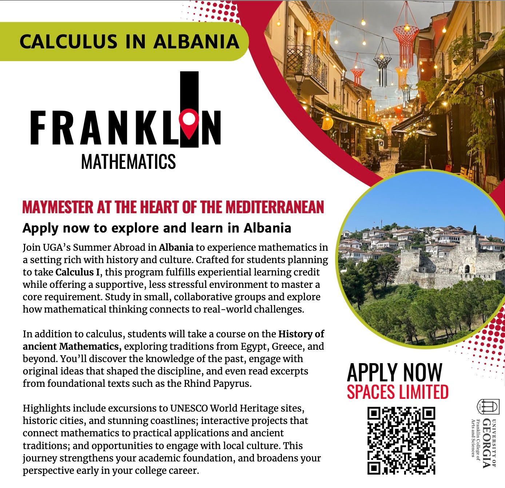
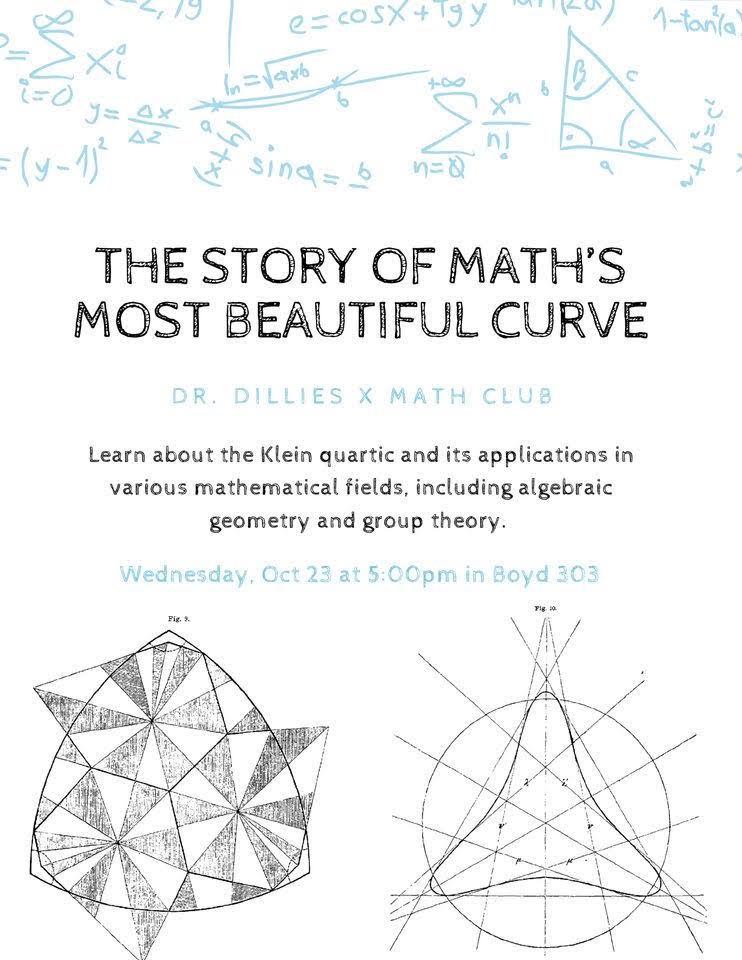
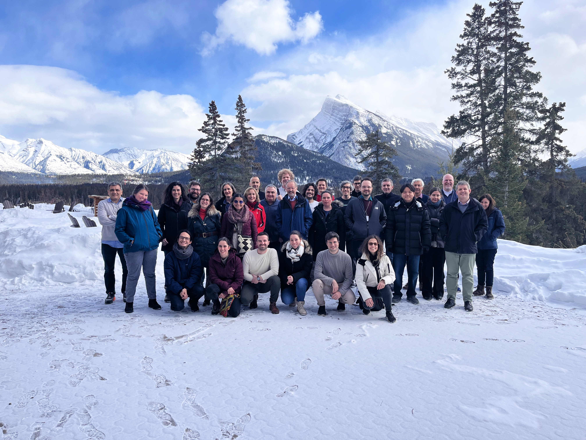

They discuss their work, intuition, and daily routines, revealing a passionate and often unknown world. The project, which includes a traveling photo exhibition and written interviews, aims to engage the public and students in the fundamental research of mathematics and physics. It offers insights into the personal and professional lives of researchers.
I was lucky to be part of this group and share with middle schoolers how duality arises from perspective and projective geometry.
Watch the documentary here [link].
